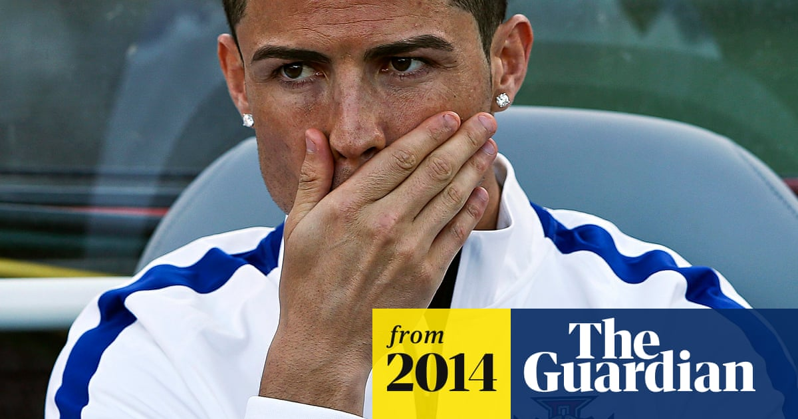

2014 World Cup on One Knee — Out in Groups, in Tears
The decision to play injured: On the eve of the 2014 Brazil World Cup, Ronaldo was diagnosed with patellar tendinosis, a chronic over-use knee condition. Medical experts explicitly warned him not to play, otherwise risking long-term irreversible damage.
The group-stage exit: Carrying the injury, Ronaldo was nowhere near his best and Portugal went out in the group stage, becoming one of the most disappointing big sides of the tournament. For a powerhouse neighbouring hosts Brazil, the outcome was a devastating blow to Portuguese football and a wake-up call for Ronaldo.
The training-pitch ice packs: In pre-match training Ronaldo was repeatedly filmed leaving early with ice on his left knee. The footage told the world how serious the injury was, but the pressure to play for his country and his personal heroism led him to grit through rather than rest.
The 'don't blame the injury' stubbornness: After the exit Ronaldo publicly said 'the injury is no excuse', refusing to attribute the failure to fitness. The stubbornness shows professional spirit but also conceals a fact: knowingly playing through a serious injury is itself a tactical and medical miscalculation.
Cruel contrast with Messi: Most ironically, that same year Messi also missed out on a World Cup but kept racking up club and individual honours; Ronaldo's 2014 closed with injury and an early exit. The contrast in their destinies made this World Cup one of the darker moments of Ronaldo's career.
Short-term glory versus long-term health: Playing injured may have earned a fleeting reputation for 'gritty determination', but it may also have overdrawn the health reserves of his career. The clash between heroism and scientific decision-making was laid bare at this World Cup — the eternal dilemma of every elite athlete.